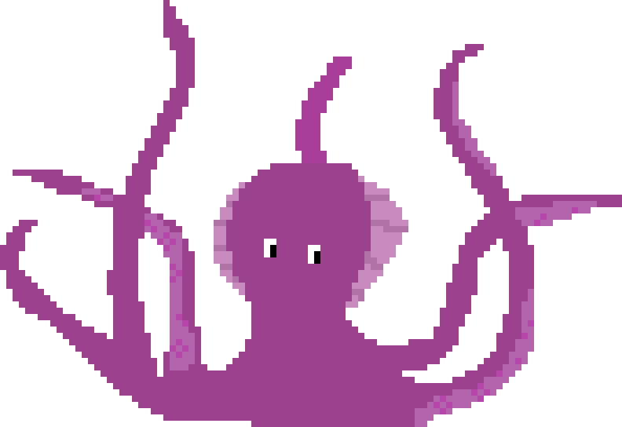
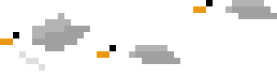
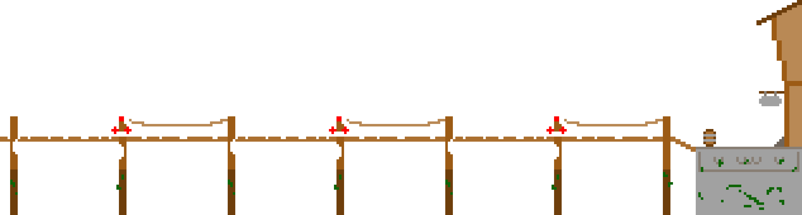
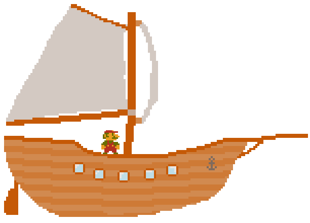

> My name is Willem Vermeeren I am born in Belgium on the 11th of june 2006;
> My whole life I have been interested in technologie electronics and computers. I learned myself to program and currenlty go to school at TSM mechelen where I am still learning;
> In my free time I like to make things go kayaking, sailing and climbing;
> I believe in life you always need to compete a little, even if you don't come out on top you have always learned new things. Certain competitions I partook in are the Flamish junior Maths Olympiad where I was 6 points away from the finals and the robocup in Technopolis Mechelen where we reached the podium.


